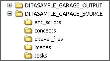
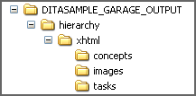
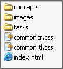
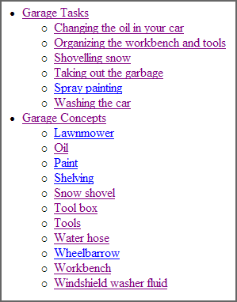

This topic assumes you have already installed DITA Open Toolkit and its prerequisite products, and have verified your installation, as described in the installation chapter of this document.
In general, the instructions in this topic assume the Windows environment; the procedure is very similar in other operating system environments.
-
If you have not already done so, create DITASAMPLE_GARAGE_SOURCE and DITASAMPLE_GARAGE_OUTPUT directories in the root directory of your C: drive (or your /home directory in Linux).
-
If you have not already done so, copy the garage sample files into the DITASAMPLE_GARAGE_SOURCE directory.
You should have a directory structure that looks like this:

-
View and edit, if necessary for your specific working environment, DITASAMPLE_GARAGE_SOURCE/ant_scripts/garage_hierarchy_all.xml.
These are the significant Ant parameters and how they are set:
-
args.input is set to use the hierarchy ditamap: hierarchy.ditamap in the DITASAMPLE_GARAGE_SOURCE directory.
-
output.dir is set to send the output to DITASAMPLE_GARAGE_OUTPUT.
-
transtype is set to xhtml.
-
In the Command Prompt window, move to DITASAMPLE_GARAGE_SOURCE/ant_scripts and invoke the above Ant script.
For example: ant -f garage_hierarchy_all.xml dita2xhtml
Alternatively, if you are processing in the Windows environment, you can use the garage sample batch script (runbuild.bat): runbuild dita2xhtml. The batch script is in the DITASAMPLE_GARAGE_SOURCE directory. The processing is the same, except the batch script filters some of the processing messages into the log file, which is created in the DITASAMPLE_GARAGE_OUTPUT directory during processing.
Alternatively, if you are processing in the Linux or UNIX environment, you can create your own batch script to perform the same functions as runbuild.bat.
-
After the XHTML file has processed successfully, go to the DITASAMPLE_GARAGE_OUTPUT directory.
Your directory structure should look like this:

The xhtml subdirectory should contain these directories and files:

-
Open the file index.html in your browser to view the XHTML output.
The browser window should look something like this:
